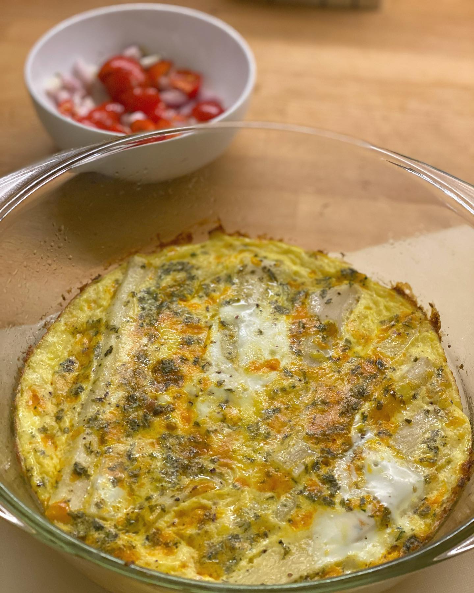

Čierny Koreň podľa @barbaralamatova — Normy Jedál
Opakujúce sa lockdowny, obdobia, keď nefunguje náš životný model pohybujúci sa medzi Bratislavou a Prahou zo mňa spravili flexitariána :). @svetbedniciek tak pre bratislavskú časť našej domácnosti zabezpečuje každotýždenný dovoz dostatočnej dávky zeleniny a ovocia. A občas s nimi znovuobjavujem takmer zabudnuté chute dúl, zimnej kapusty, čierneho koreňa a pod. Na obrázku zapekaný čierny koreň.. Naozaj dobrota :) #svetbedniciek #flexitariandiet #ciernykoren #lokalnejedlo #lokalnifarmari